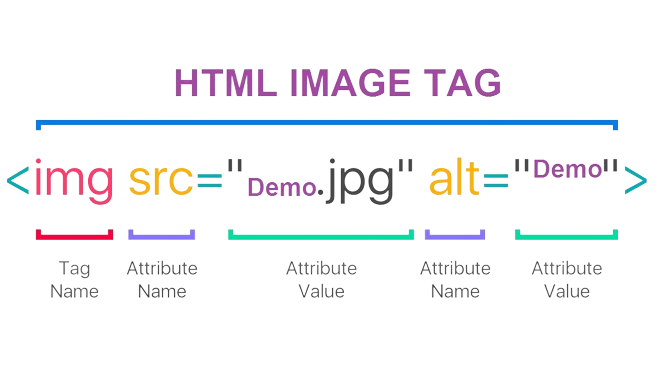

Obrazki HTML
Obrazki są na praktycznie każdej stronie internetowej, dlatego należy wiedzieć jak z nich korzystać.
Znacznik <img>
Znacznik <img> jest znacznikiem pojedyńczym liniowym, semantycznym. Każdy znacznik <img> musi posiadać dwa atrybuty src="" w którym umieszczamy ścieżkę do obrazka (najlepiej względną) oraz atrybut alt="", w którym umieszczamy opis obrazka, który jest wyświetlany gdy nie ma dostępu do obrazka. Znacznik posiada też atrybut title, w który możemy wpisać tekst, który pokaże się po najechaniu na obraz wskaźnikiem.
Umieszczanie obrazu jako link
Aby obrazek stał sie linkiem musimy umieścić w znaczniku <a> znacznik <img> w ten sposób:
<a href="https://www.w3schools.com/tags/tag_img.asp"><img src="../Obrazy/obrazki/w3schools.png" alt="w3schols link"></a>A to link w formie obrazka do strony w3schools o znaczniku img

Responsywność obrazka
Responsywność obrazka to ważna część w budowie strony, aby uniknąc przepełnień szerokości ekranu. Aby obrazek był responsywny, trzeba nadać mu wartości w atrybucie style: max-width: oraz aspect-ratio: tak jak pokazano w kodzie poniżej:
<img src="ścieżka/do/obrazka" alt="obrazek pokazowy" style="max-width: 40vw; aspect-ratio: 2/1;">Rozbijmy to na mniejsze części, atrybut style tworzy wewnętrzny arkusz stylów, w którym mówimy że szerokość obrazka może wynosić maksymalnie 40% szerokości ekranu, a proporcja jego szerokości do wysokości ma wynieść 2/1